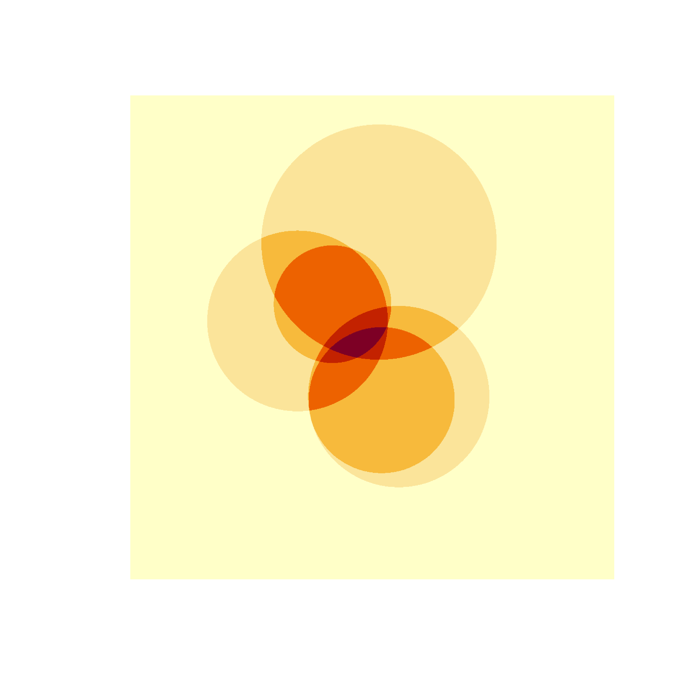
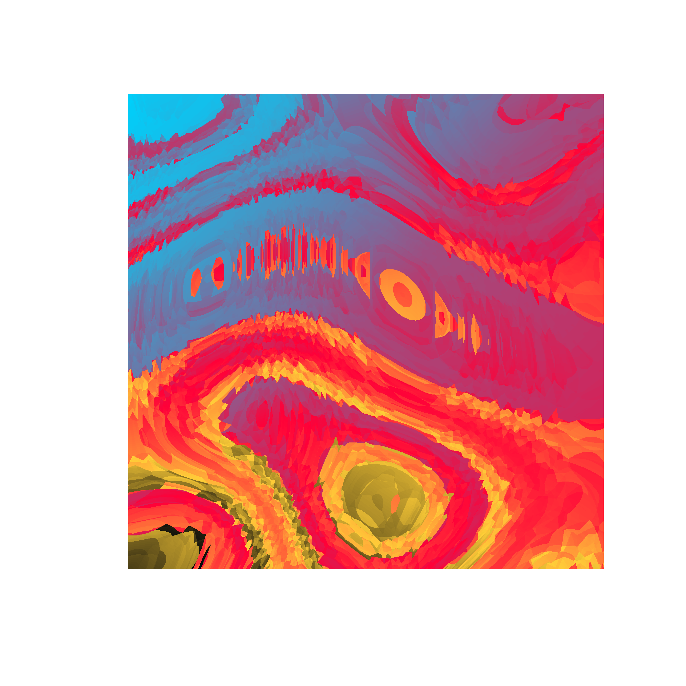
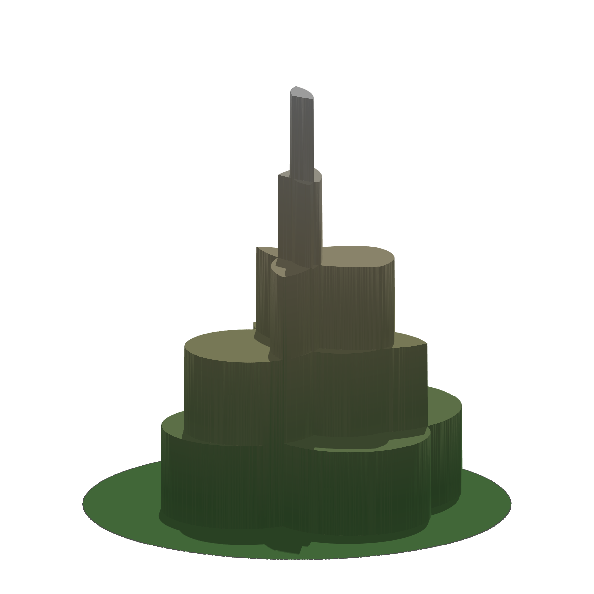
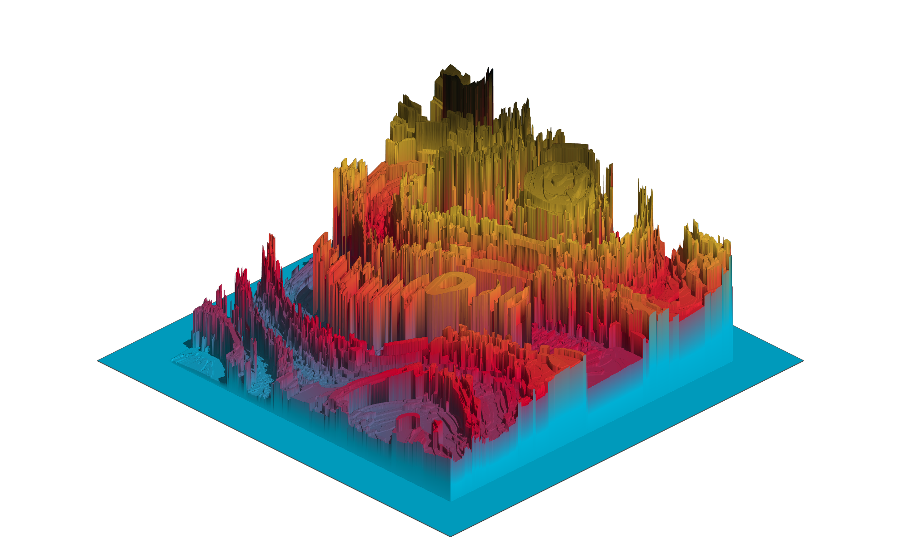

![]()
library(rayshader)
library(tibble)
library(ambient)
library(dplyr)
library(ggplot2)
library(ggthemes)
library(tictoc)
library(dplyr)A couple of years ago I gave an invited workshop called art from code at the 2022 rstudio::conf (now posit::conf) conference. As part of the workshop I wrote a lengthy series of notes on how to make generative art using R, all of which were released under a CC-BY licence. For a while now I’d been thinking I should do something with these notes. I considered writing a book, but in all honesty I don’t have the spare capacity for a side-project of that scale these days. I can barely keep up with the workload at my day job as it is. So instead, I’ve decided that I’d port them over to this site as a series of blog posts. In doing so I’ve made a deliberate decision not to modify the original content too much (nobody loves it when an artist tries to “improve” the original, after all). All I’ve done is update the code to accommodate package changes since 2022, and some minor edits so that the images are legible when embedded in this blog (which is light-themed, and the original was dark-theme). Other than that, I’ve left it alone. This is the fourth post in that series.
- Prelude
- Spatial tricks with ambient
- Polygon tricks
- Shading tricks
- Iterated function systems
- Tiles and tessellations
- Pixel filters
Rayshader art
The rayshader package is a tool used to generate 2D and 3D visualisations in R. It is designed primarily to work with elevation data: you can use it to create beautiful shaded maps in two and three dimensions. You don’t have to restrict yourself to mapping applications though. For example, you can use it to create 3D ggplot images if you want. More importantly for our purposes, generative artists in the R community have begun exploring the artistic possibilities inherent in the package. It’s a relatively new addition to my repertoire: I’ve only built a few generative art systems this way, and I’m still a novice user of the package. However, it’s too much fun not to talk about it here, so let’s take rayshader for a spin.
To help get us started, I’ll build a very simple generative art system. All it does is overlay a few circles on top of one another. To make this system work, I’ll define a helper function is_within_circle that takes coordinate vectors x_coord and y_coord as inputs, and returns a logical vector that is TRUE whenever those coordinates fall within a circle specified by the radius, x_center, and y_center values.
is_within_circle <- function(x_coord, y_coord, x_center, y_center, radius) {
(x_coord - x_center)^2 + (y_coord - y_center)^2 < radius^2
}The additive_circles() function generates n circles at random (defaulting to 5 circles), and returns a long grid that defines a canvas with coordinate columns x and y, and a value column paint indicating the proportion of circles that each point falls in. If a particular point falls within every circle, the corresponding paint value is 1; if it falls within none of the circles the value is 0:
additive_circles <- function(n = 5, pixels = 1000, seed = NULL) {
if(!is.null(seed)) set.seed(seed)
# setup canvas
art <- long_grid(
x = seq(0, 1, length.out = pixels),
y = seq(0, 1, length.out = pixels)
)
art$paint <- 0
for(i in 1:n) {
# sample a random circle
x_center <- runif(1, min = .3, max = .7)
y_center <- runif(1, min = .3, max = .7)
radius <- runif(1, min = .05, max = .25)
# add +1 to all points inside the circle
art <- art |>
mutate(
paint = paint + is_within_circle(
x, y, x_center, y_center, radius
)
)
}
# normalise paint to [0, 1] range and return
art$paint <- normalise(art$paint)
return(art)
}Here’s what happens when we generate output from the system and then use geom_raster() to plot it:
circle_art <- additive_circles(seed = 99)
circle_art# A tibble: 1,000,000 × 3
x y paint
<dbl> <dbl> <dbl>
1 0 0 0
2 0 0.00100 0
3 0 0.00200 0
4 0 0.00300 0
5 0 0.00400 0
6 0 0.00501 0
7 0 0.00601 0
8 0 0.00701 0
9 0 0.00801 0
10 0 0.00901 0
# ℹ 999,990 more rowsggplot(circle_art, aes(x, y, fill = paint)) +
geom_raster(show.legend = FALSE) +
theme_void()Experienced ggplot2 users might wonder why I’m generating art in this fashion. Why go to all the trouble of defining a raster when ggplot2 already has a geom_polygon() function that I could have used to draw the same image? The answer to this is that the rayshader package likes to deal with matrices (and other arrays). Instead of representing the data in a tibble with x and y coordinates that just happen to define a grid, it expects inputs in the form of a matrix where each row corresponds to a y coordinate and each column corresponds to an x coordinate, and the values in each cell correspond to (in our case) the paint values. Conveniently for us, the object we used to store our artwork isn’t a regular tibble, it’s a long grid provide by the ambient package. The ambient package knows how to convert this to an array quickly and painlessly:
circle_array <- circle_art |>
as.array(value = paint)
circle_array[1:10, 1:10] x
y [,1] [,2] [,3] [,4] [,5] [,6] [,7] [,8] [,9] [,10]
[1,] 0 0 0 0 0 0 0 0 0 0
[2,] 0 0 0 0 0 0 0 0 0 0
[3,] 0 0 0 0 0 0 0 0 0 0
[4,] 0 0 0 0 0 0 0 0 0 0
[5,] 0 0 0 0 0 0 0 0 0 0
[6,] 0 0 0 0 0 0 0 0 0 0
[7,] 0 0 0 0 0 0 0 0 0 0
[8,] 0 0 0 0 0 0 0 0 0 0
[9,] 0 0 0 0 0 0 0 0 0 0
[10,] 0 0 0 0 0 0 0 0 0 0The ability to flip back and forth between a tibble-like representation and a matrix-like representation is very handy! Anyway, the important point is that circle_array is now a matrix. I can plot this matrix directly using image():
circle_array |>
image(axes = FALSE, asp = 1, useRaster = TRUE)
Let’s imagine for a moment that this image is actually a terrain map, and the values stored in circle_array refer to the height of the terrain at each point on the grid. If that were true, and we placed an illumination source above the terrain, what pattern of shadows would be cast? We can solve this using ray shading algorithms, and unsurprisingly the rayshader package contains a function called ray_shade() that does this for us. We pass our data matrix as the heightmap argument, provide sunaltitude and sunangle arguments to specify the position of the illumination source, and use the zscale argument to specify the scale of the z-axis (the values) relative to the x- and y-axes.
Here’s what that looks like:
circle_shadow <- ray_shade(
heightmap = circle_array,
sunaltitude = 15,
sunangle = 135,
zscale = .01,
multicore = TRUE
)
plot_map(circle_shadow, rotate = 270)The results lack colour because this is only a map of the intensity of the shadow at each point. It’s not a map of the terrain. If we want to construct that map we need something like a hill shading algorithm supplied by sphere_shade(), but that requires us to supply a texture. That’s probably overkill for our initial application. Alternatively, if all we want is a height-to-colour mapping, we can use height_shade() to create the texture, and then use add_shadow() to add the shadow:
circle_scape <- circle_array |>
height_shade() |>
add_shadow(
shadowmap = circle_shadow,
max_darken = .1
)
plot_map(circle_scape, rotate = 270)In the final line I called plot_map() to draw the final image, using the rotate argument so that the final image has the same orientation as the image I created with geom_raster() at the beginning of this page.
Shadowed noise fields
Now that we have a general sense of how to use rayshader to create pretty images, let’s see if we can use it to make something a little more interesting than a shaded map of a few circles laid on top of one another. One place to start is to return to the spatial noise patterns generated by gen_perlin(), gen_simplex() and so on. There’s some potential for interesting art there right?
Before we get into that, we’re going to – yet again – need a palette generating function. So once again I’ll define a function to sample palettes using the ggthemes::canva_palettes list. However, this time around I’ll be a little more elaborate. All the palettes in the original object contain exactly four colours. What I’ll with the sample_canva2() function is include an n argument that specifies the number of colours desired, linearly interpolating between colours as necessary.
sample_canva2 <- function(seed = NULL, n = 4) {
if(!is.null(seed)) set.seed(seed)
sample(ggthemes::canva_palettes, 1)[[1]] |>
(\(x) colorRampPalette(x)(n))()
}Here’s an example:
sample_canva2(seed = 1)
sample_canva2(seed = 1, n = 7)[1] "#FCC875" "#BAA896" "#E6CCB5" "#E38B75"
[1] "#FCC875" "#DBB885" "#BAA896" "#D0BAA5" "#E6CCB5" "#E4AB95" "#E38B75"This functionality is handy in this context to ensure that we have enough different colours to produce nice gradients in our rayshader outputs. When working with ggplot2 the scale_*_gradientn() function took care of that for us, but we’re not using ggplot2 here.
In any case, here’s ridge_art(), a function that uses the spatial noise toolkit from the ambient package to produce patterns. The output comes in matrix form rather than as a long grid:
ridge_art <- function(seed = NULL, pixels = 2000) {
if(!is.null(seed)) set.seed(seed)
long_grid(
x = seq(from = 0, to = 1, length.out = pixels),
y = seq(from = 0, to = 1, length.out = pixels)
) |>
mutate(
paint = fracture(
x = x,
y = y,
noise = gen_simplex,
fractal = ridged,
octaves = 8,
frequency = 10,
seed = seed
),
paint = normalise(paint)
) |>
as.array(value = paint)
}All the work in generating images is being done by the gen_simplex() generator, the ridged() fractal function, and the fracture() function that provides ambients API for fractal noise. To give you a sense of what kind of output this system produces natively, here’s an image():
ridge_art(1234) |>
image(
axes = FALSE,
asp = 1,
useRaster = TRUE,
col = sample_canva2(seed = 1234, n = 256)
) 
That’s quite pretty in its own right, but we can give it a real feeling of depth by using rayshader. The idea is essentially identical to what we did when shading our circles art: compute a height map, a shadow map, and add them together before calling plot_map(). Here’s the code for a shaded_ridge_art() function that does this:
shaded_ridge_art <- function(seed = NULL) {
art <- ridge_art(seed)
height_shade(
heightmap = art,
texture = sample_canva2(seed, 256)
) |>
add_shadow(
shadowmap = ray_shade(
heightmap = art,
sunaltitude = 30,
sunangle = 90,
multicore = TRUE,
zscale = .05
),
max_darken = .1
) |>
plot_map()
}Here’s our ridged art piece rendered as a shaded version:
tic()
shaded_ridge_art(1234)
toc()18.801 sec elapsedJust because they’re pretty and it’s not that hard to generate new pieces – one of the joys of generative art is that the moment you make one piece you like you can immediately make many more in the same style – here are a few more outputs from the system:
shaded_ridge_art(100)
shaded_ridge_art(101)
shaded_ridge_art(102) 


Fractured terrain
Back in the early days of the pandemic I made a series of generative art pieces called Quarantine Moods that was, well, pretty incoherent. Not very surprising: I was trapped indoors and stressed, so there’s no theme or structure to the whole thing. Later on though I found the code for one of the pieces that I really liked and reworked it to create a new system that I called Ice Floes. Pieces from this system have a jagged, fractured geometric look to them. One of the first thoughts I had when exploring the rayshader package was that these images would generate some really interesting shadows, and it would be fun to see what happens when I applied rayshader methods to those outputs. So… that’s what I did!
The first step in the process is to recreate the ice floes system, or at least something very similar to it. The trick behind this system is to generate spatial noise defined over a different space to the one I intend to plot at the end. I generate new coordinates by constructing a map from the original coordinates to the corresponding curl space. Or, to put it in less pretentious terms, I use curl_noise() to produce a new set of coordinates that I’m going to feed into other noise processes. Here’s the function I’ll use to that:
transform_to_curl_space <- function(x, y, frequency = 1, octaves = 10) {
curl_noise(
generator = fracture,
noise = gen_simplex,
fractal = fbm,
octaves = octaves,
frequency = frequency,
x = x,
y = y
)
}The next step is to use Worley noise to construct a set of cells, in this transformed space. To do that I’ll define a helper function that takes a set of coordinates (in whatever space) as input and outputs values associated with the cells:
define_worley_cells <- function(x, y, frequency = 3, octaves = 6) {
fracture(
noise = gen_worley,
fractal = billow,
octaves = octaves,
frequency = frequency,
value = "cell",
x = x,
y = y
) |>
rank() |>
normalise()
}Now back in the original space, we’ll use the cell values to (discontinuously) add offsets to the x- and y-coordinates, and then generate simplex noise using those offset coordinates. The net effect of this is that we have the simplex noise varies smoothly within cells (whose borders are quite peculiar because they’re generated in the curl space) but discontinuous between cells. This is going to give us an image that is both smooth and jagged.
Anyway, this means we need one more helper function:
simplex_noise <- function(x, y, frequency = .1, octaves = 10) {
fracture(
noise = gen_simplex,
fractal = ridged,
octaves = octaves,
frequency = frequency,
x = x,
y = y
) |>
normalise()
}Now we have all the pieces we need to construct an ice_floe() function that is more or less equivalent to my original system:
ice_floe <- function(seed) {
set.seed(seed)
grid <- long_grid(
x = seq(0, 1, length.out = 2000),
y = seq(0, 1, length.out = 2000)
)
coords <- transform_to_curl_space(grid$x, grid$y)
grid |>
mutate(
cells = define_worley_cells(coords$x, coords$y),
paint = simplex_noise(x + cells, y + cells),
paint = normalise(paint)
) |>
as.array(value = paint)
}To give you a sense of what images from the original system look like when coloured using one of the canva palettes, I’ll again use image() to plot the output of the base system:
ice_floe(170) |>
image(
axes = FALSE,
asp = 1,
useRaster = TRUE,
col = sample_canva2(seed = 170, n = 256)
)
Creating the shaded version of the system proceeds the same way it did when we created the shaded_ridge_art() function. We call ice_floe() to create a matrix of elevations, construct an appropriately shaded elevation map using height_shade(), and then call add_shadow() to add a shadow map generated using ray_shade(). Then we call plot_map() to create the output:
shaded_ice_floe <- function(seed) {
art <- ice_floe(seed)
height_shade(
heightmap = art,
texture = sample_canva2(seed, 256)
) |>
add_shadow(
shadowmap = ray_shade(
heightmap = art,
sunaltitude = 30,
sunangle = 90,
multicore = TRUE,
zscale = .005
),
max_darken = .05
) |>
plot_map()
}
shaded_ice_floe(170)
Turns out it’s quite pretty. Here are a few more outputs:
shaded_ice_floe(100)
shaded_ice_floe(101)
shaded_ice_floe(102)


shaded_ice_floe(106)
shaded_ice_floe(107)
shaded_ice_floe(108)

Three dimensional art
The examples I’ve shown so far all have a feeling of depth because of the way ray_shade() produces natural looking shadows. They’re not truly 3D renderings though. You can’t rotate them in 3D or display them from different perspectives. Happily, the rayshader package allows you to create 3D plots using the plot_3d() function. Under the hood, this function relies on the rgl package, which in turn provides access to OpenGL. For this function to work, your installation of the rgl package needs to be built with access to OpenGL tools. On windows that should happen automatically, but it can be a little mmore tricky on other operating systems. To get it to work on my Ubuntu machine what I had to do was first install OpenGL. The command I used at the terminal was this:
sudo apt-get install libgl1-mesa-dev libglu1-mesa-devOnce that was complete, I had to force a reinstall for the rgl package to ensure it had been built with the OpenGL libraries present. At the R console:
install.packages("rgl", force = TRUE)Having done so, everything worked pretty smoothly for me.
Okay, so what can we do with 3d rendering? To start with, let’s keep things simple and use the “circles” example. I’ve already computed a height map (circle_array) and a shading map (circle_scape) that incorporates the shadows, so I can pass both of the to plot_3d(). It’s a little fiddly, so I had to tinker with the angles and other settings to get a result that worked:
plot_3d(
hillshade = circle_scape,
heightmap = circle_array,
theta = 230,
phi = 15,
zoom = .8,
zscale = .001,
baseshape = "circle",
background = "#ffffff",
shadow = FALSE,
soliddepth = 0,
solidcolor = "#111111",
windowsize = 1200
)
render_snapshot(
filename = "circles_3d.png",
clear = TRUE
)knitr::include_graphics("circles_3d.png")
It kind of looks like a tower. It’s kind of neat in its own right, but the output gets much more fun when you start feeding richer input to plot_3d(). Here’s what happens when I adapt the “ice floes” system to produce truly three dimensional images:
seed <- 170
ice_height <- matrix(0, 2500, 2500)
ice_height[251:2250, 251:2250] <- ice_floe(seed)
ice_scape <- height_shade(
heightmap = ice_height,
texture = sample_canva2(seed, 256)
) |>
add_shadow(
shadowmap = ray_shade(
heightmap = ice_height,
sunaltitude = 30,
sunangle = 90,
multicore = TRUE,
zscale = .005
),
max_darken = .05
)
plot_3d(
hillshade = ice_scape,
heightmap = ice_height,
theta = 45,
phi = 30,
zoom = .75,
zscale = .001,
background = "#ffffff",
shadow = FALSE,
soliddepth = .5,
solidcolor = "#222222",
windowsize = c(2500, 1500)
)
render_snapshot(
filename = "ice_3d.png",
clear = TRUE
)knitr::include_graphics("ice_3d.png")
Even I have to admit I was impressed with myself this time. That worked way better than I was expecting it to, and I suspect it would look even nicer if I’d taken the time to learn more about hill shading algorithms and used sphere_shade() to create a proper terrain map rather rather than relying on height_shade(). Something to play around with in the future :)
Materials
Code for each of the source files referred to in this section of the workshop is included here. Click on the callout box below to see the code for the file you want to look at. Please keep in mind that (unlike the code in the main text) I haven’t modified these scripts since the original workshop, so you might need to play around with them to get them to work!
Reuse
Citation
BibTeX citation:
@online{navarro2024,
author = {Navarro, Danielle},
title = {Art from Code {IV:} {Shading} Tricks},
date = {2024-12-21},
url = {https://blog.djnavarro.net/posts/2024-12-21_art-from-code-4/},
langid = {en}
}
For attribution, please cite this work as: